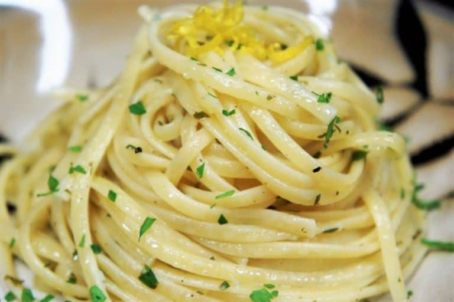

Odin Recipes

Lemons and pepper go together like lemons and pepper, trust me just make this
-
1 pound Linguine
-
¼ cup Extra Virgin Olive Oil
-
2 tablespoons plus ¼ teaspoon Kosher Salt, divided
-
¼ cup Butter
-
1 Large Garlic Clove, grated or minced
-
¼ cup Lemon Juice
-
1 tablespoon Lemon Zest
-
¼ – ½ teaspoon Fresh Ground Black Pepper, or to taste
-
¼ cup Pasta Cooking Water
-
3 tablespoons Parsley, chopped
-
Parmesan Cheese, for serving
-
Bring a large pot of water to a boil, add 2 tablespoons of salt and the linguine. Stir the pasta frequently for the first few minutes of cooking time. Cook the pasta to package directions for al dente
-
While the pasta cooks: Heat a skillet over medium heat, add the olive oil and the butter. Heat until the butter is melted and foamy. Lower the heat to medium-low and add the garlic. Cook for 1 minute, stirring constantly
-
Lower the heat to low and add the lemon juice, lemon zest, ¼ teaspoon of salt and the fresh ground pepper to the skillet. Stir to combine the ingredients well and cook gently for another minute or two. Remove the skillet from the heat and set aside until the pasta is done and drained
-
Before draining the pasta, reserve about ¼ cup of the pasta cooking water and set aside. Drain the pasta completely, and return it to the pot.
-
Toss the pasta with the lemon sauce, reserved cooking water and the parsley. Serve the lemon pepper pasta with extra black pepper and Parmesan cheese.